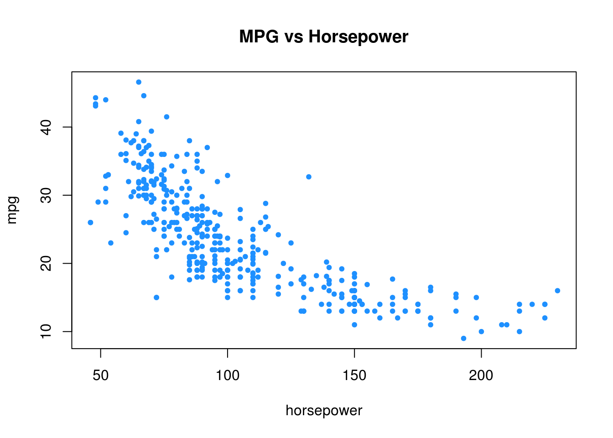
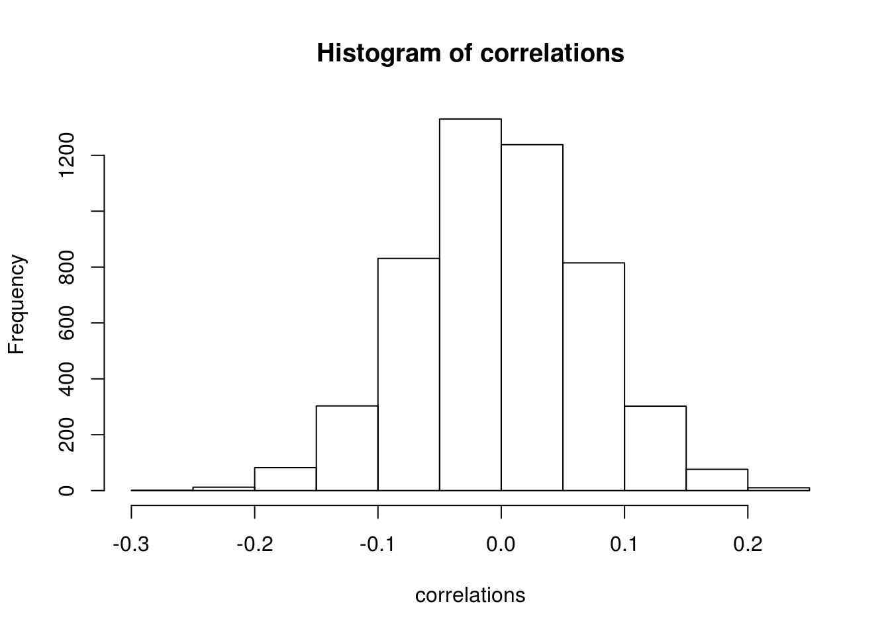

Chapter 17 Resampling
In this chapter we introduce resampling methods including cross-validation and the bootstrap.
library(ISLR)Here, we will use the Auto data from ISLR and attempt to predict mpg (a numeric variable) from horsepower.
## # A tibble: 392 × 9
## mpg cylinders displacement horsepower weight acceleration year
## * <dbl> <dbl> <dbl> <dbl> <dbl> <dbl> <dbl>
## 1 18 8 307 130 3504 12.0 70
## 2 15 8 350 165 3693 11.5 70
## 3 18 8 318 150 3436 11.0 70
## 4 16 8 304 150 3433 12.0 70
## 5 17 8 302 140 3449 10.5 70
## 6 15 8 429 198 4341 10.0 70
## 7 14 8 454 220 4354 9.0 70
## 8 14 8 440 215 4312 8.5 70
## 9 14 8 455 225 4425 10.0 70
## 10 15 8 390 190 3850 8.5 70
## # ... with 382 more rows, and 2 more variables: origin <dbl>, name <fctr>
17.1 Test-Train Split
First, let’s return to the usual test-train split procedure that we have used so far. Let’s evaluate what happens if we repeat the process a large number of times, each time storing the test RMSE. We’ll consider three models:
- An underfitting model:
mpg ~ horsepower - A reasonable model:
mpg ~ poly(horsepower, 2) - A ridiculous, overfitting model:
mpg ~ poly(horsepower, 8)
set.seed(42)
num_reps = 100
lin_rmse = rep(0, times = num_reps)
quad_rmse = rep(0, times = num_reps)
huge_rmse = rep(0, times = num_reps)
for(i in 1:100) {
train_idx = sample(392, size = 196)
lin_fit = lm(mpg ~ horsepower, data = Auto, subset = train_idx)
lin_rmse[i] = sqrt(mean((Auto$mpg - predict(lin_fit, Auto))[-train_idx] ^ 2))
quad_fit = lm(mpg ~ poly(horsepower, 2), data = Auto, subset = train_idx)
quad_rmse[i] = sqrt(mean((Auto$mpg - predict(quad_fit, Auto))[-train_idx] ^ 2))
huge_fit = lm(mpg ~ poly(horsepower, 8), data = Auto, subset = train_idx)
huge_rmse[i] = sqrt(mean((Auto$mpg - predict(huge_fit, Auto))[-train_idx] ^ 2))
}
Notice two things, first that the “Reasonable” model has on average the smallest error. Second, notice large variability in the RMSE. We see this in the “Reasonable” model, but it is very clear in the “Ridiculous” model. Here it is very clear that if we use an “unlucky” split, our test error will be much larger than the likely reality.
17.2 Cross-Validation
Instead of using a single test-train split, we instead look to use cross-validation. There are many ways to perform cross-validation R, depending on the method of interest.
17.2.1 Method Specific
Some method, for example glm() through cv.glm() and knn() through knn.cv() have cross-validation capabilities built-in. We’ll use glm() for illustration. First we need to convince ourselves that glm() can be used to perform the same tasks as lm().
glm_fit = glm(mpg ~ horsepower, data = Auto)
coef(glm_fit)## (Intercept) horsepower
## 39.9358610 -0.1578447lm_fit = lm(mpg ~ horsepower, data = Auto)
coef(lm_fit)## (Intercept) horsepower
## 39.9358610 -0.1578447By default, cv.glm() will report leave-one-out cross-validation (LOOCV).
library(boot)
glm_fit = glm(mpg ~ horsepower, data = Auto)
loocv_rmse = sqrt(cv.glm(Auto, glm_fit)$delta)
loocv_rmse## [1] 4.922552 4.922514loocv_rmse[1]## [1] 4.922552We are actually given two values. The first is exactly the LOOCV-RMSE. The second is a minor correct that we will not worry about. We take a square root to obtain LOOCV-RMSE.
loocv_rmse_poly = rep(0, times = 10)
for (i in seq_along(loocv_rmse_poly)) {
glm_fit = glm(mpg ~ poly(horsepower, i), data = Auto)
loocv_rmse_poly[i] = sqrt(cv.glm(Auto, glm_fit)$delta[1])
}
loocv_rmse_poly## [1] 4.922552 4.387279 4.397156 4.407316 4.362707 4.356449 4.339706
## [8] 4.354440 4.366764 4.414854plot(loocv_rmse_poly, type = "b", col = "dodgerblue",
main = "LOOCV-RMSE vs Polynomial Degree",
ylab = "LOOCV-RMSE", xlab = "Polynomial Degree")
If you run the above code locally, you will notice that is painfully slow. We are fitting each of the 10 models 392 times, that is, each model \(n\) times, once with each data point left out. (Note: in this case, for a linear model, there is actually a shortcut formula which would allow us to obtain LOOCV-RMSE from a single fit to the data. See details in ISL as well as a link below.)
We could instead use \(k\)-fold cross-validation.
set.seed(17)
cv_10_rmse_poly = rep(0, times = 10)
for (i in seq_along(cv_10_rmse_poly)){
glm_fit = glm(mpg ~ poly(horsepower, i), data = Auto)
cv_10_rmse_poly[i] = sqrt(cv.glm(Auto, glm_fit, K = 10)$delta[1])
}
cv_10_rmse_poly## [1] 4.919878 4.380552 4.393929 4.397498 4.345010 4.361311 4.346963
## [8] 4.439821 4.353321 4.416102plot(cv_10_rmse_poly, type = "b", col = "dodgerblue",
main = "10 Fold CV-RMSE vs Polynomial Degree",
ylab = "10 Fold CV-RMSE", xlab = "Polynomial Degree")Here we chose 10-fold cross-validation. Notice it is much faster. In practice, we usually stick to 5 or 10-fold CV.
set.seed(42)
num_reps = 100
lin_rmse_10_fold = rep(0, times = num_reps)
quad_rmse_10_fold = rep(0, times = num_reps)
huge_rmse_10_fold = rep(0, times = num_reps)
for(i in 1:100) {
lin_fit = glm(mpg ~ poly(horsepower, 1), data = Auto)
quad_fit = glm(mpg ~ poly(horsepower, 2), data = Auto)
huge_fit = glm(mpg ~ poly(horsepower, 8), data = Auto)
lin_rmse_10_fold[i] = sqrt(cv.glm(Auto, lin_fit, K = 10)$delta[1])
quad_rmse_10_fold[i] = sqrt(cv.glm(Auto, quad_fit, K = 10)$delta[1])
huge_rmse_10_fold[i] = sqrt(cv.glm(Auto, huge_fit, K = 10)$delta[1])
}Repeating the test-train split analysis from above, this time with 10-fold CV, see that that the resulting RMSE are much less variable. That means, will cross-validation still has some inherent randomness, it has a much smaller effect on the results.

17.2.2 Manual Cross-Validation
For methods that do not have a built-in ability to perform cross-validation, or for methods that have limited cross-validation capability, we will need to write our own code for cross-validation. (Spoiler: This is not true, but let’s pretend it is, so we can see how to perform cross-validation from scratch.)
This essentially ammounts to randomly splitting the data, then looping over the splits. The createFolds() function from teh caret() package will make this much easier.
caret::createFolds(Auto$mpg)## $Fold01
## [1] 8 16 23 34 38 43 57 73 81 107 123 127 141 162 174 177 180
## [18] 187 188 218 221 227 232 238 244 258 273 281 282 284 287 305 307 318
## [35] 321 331 337 341 376 385 388
##
## $Fold02
## [1] 18 20 35 58 67 75 78 95 96 125 126 142 154 157 159 168 170
## [18] 172 182 186 215 241 249 255 271 277 288 289 292 298 301 304 310 311
## [35] 315 322 328 352 370 373
##
## $Fold03
## [1] 11 21 22 25 30 39 44 45 46 47 63 65 69 79 90 112 137
## [18] 147 165 167 173 204 209 213 216 217 239 247 267 279 308 313 329 338
## [35] 339 351 359 361 379
##
## $Fold04
## [1] 1 28 29 59 61 85 92 121 136 143 145 146 148 153 155 163 193
## [18] 198 202 206 212 224 231 233 246 266 269 280 295 303 323 326 336 343
## [35] 364 375 382 387
##
## $Fold05
## [1] 7 17 31 41 48 49 51 53 71 80 86 87 93 94 100 120 132
## [18] 135 169 176 200 214 219 225 229 236 250 256 278 296 297 306 319 332
## [35] 349 354 356 381 391 392
##
## $Fold06
## [1] 6 12 14 42 50 60 68 82 91 99 101 102 105 108 139 158 160
## [18] 171 179 183 185 208 226 240 243 245 251 252 253 254 309 320 325 330
## [35] 348 350 365 378 383
##
## $Fold07
## [1] 24 52 64 72 83 84 88 131 133 138 150 161 175 189 190 191 201
## [18] 211 230 261 262 264 265 272 275 285 286 294 312 317 333 342 355 358
## [35] 360 362 363 374 380
##
## $Fold08
## [1] 2 5 10 40 54 56 62 76 77 89 104 109 118 119 128 129 130
## [18] 134 181 184 194 197 220 228 257 259 263 268 270 276 290 293 300 347
## [35] 357 366 368 369 371
##
## $Fold09
## [1] 3 9 26 32 37 55 66 74 103 106 113 116 140 149 152 156 164
## [18] 166 178 195 199 203 207 210 234 235 237 248 283 299 302 314 316 327
## [35] 334 340 345 372 384
##
## $Fold10
## [1] 4 13 15 19 27 33 36 70 97 98 110 111 114 115 117 122 124
## [18] 144 151 192 196 205 222 223 242 260 274 291 324 335 344 346 353 367
## [35] 377 386 389 390Can you use this to verify the 10-fold CV results from above?
17.2.3 Test Data
The following example illustrates the need for a test set which is never used in model training. If for no other reason, it gives us a quick sanity check that we have cross-validated correctly.
To be specific we will test-train split the data, then perform cross-validation on the training data.
accuracy = function(actual, predicted) {
mean(actual == predicted)
}# simulate data
# y is 0/1
# X are independent N(0,1) variables
# X has no relationship with the response
# p >>> n
set.seed(430)
n = 400
p = 5000
X = replicate(p, rnorm(n))
y = c(rep(0, times = n / 4), rep(1, times = n / 4),
rep(0, times = n / 4), rep(1, times = n / 4))# first n/2 observations are used for training
# last n/2 observations used for testing
# both are 50% 0s and 50% 1s
# cv will be done inside train data
full_data = data.frame(y, X)
train = full_data[1:(n / 2), ]
test = full_data[((n / 2) + 1):n, ]First, we use the screen-then-validate approach.
# find correlation between y and each predictor variable
correlations = apply(train[, -1], 2, cor, y = train$y)
hist(correlations)
# select the 25 largest (absolute) correlation
# these should be "useful" for prediction
selected = order(abs(correlations), decreasing = TRUE)[1:25]
correlations[selected]## X424 X4779 X2484 X1154 X2617 X1603
## -0.2577389 0.2491598 0.2379113 -0.2373367 0.2336055 0.2327971
## X2963 X1091 X2806 X4586 X2569 X4532
## 0.2318932 -0.2281451 -0.2271382 0.2252979 0.2239974 -0.2225698
## X3167 X741 X3329 X3862 X1741 X654
## -0.2201853 -0.2188919 -0.2186248 -0.2174146 -0.2150666 0.2130732
## X3786 X4617 X3296 X2295 X999 X4349
## 0.2090650 -0.2086551 -0.2075271 -0.2072127 0.2055167 -0.1995252
## X1409
## 0.1977006# subset the test and training data based on the selected predictors
train_screen = train[c(1, selected)]
test_screen = test[c(1, selected)]
# fit an additive logistic regression
# use 10-fold cross-validation to obtain an estimate of test accuracy
# horribly optimistic
library(boot)
glm_fit = glm(y ~ ., data = train_screen, family = "binomial")
1 - cv.glm(train_screen, glm_fit, K = 10)$delta[1]## [1] 0.709234# get test accuracy, which we expect to be 0.50
# no better than guessing
glm_pred = (predict(glm_fit, newdata = test_screen, type = "response") > 0.5) * 1
accuracy(predicted = glm_pred, actual = test_screen$y)## [1] 0.46Now, we will correctly screen-while-validating.
# use the caret package to obtain 10 "folds"
folds = caret::createFolds(train_screen$y)
# for each fold
# - pre-screen variables on the 9 training folds
# - fit model to these variables
# - get accuracy on validation fold
fold_acc = rep(0, length(folds))
for(i in seq_along(folds)) {
# split for fold i
train_fold = train[-folds[[i]],]
validate_fold = train[folds[[i]],]
# screening for fold i
correlations = apply(train_fold[, -1], 2, cor, y = train_fold[,1])
selected = order(abs(correlations), decreasing = TRUE)[1:25]
train_fold_screen = train_fold[ ,c(1,selected)]
validate_fold_screen = validate_fold[ ,c(1,selected)]
# accuracy for fold i
glm_fit = glm(y ~ ., data = train_fold_screen, family = "binomial")
glm_pred = (predict(glm_fit, newdata = validate_fold_screen, type = "response") > 0.5)*1
fold_acc[i] = mean(glm_pred == validate_fold_screen$y)
}
# report all 10 validation fold accuracies
fold_acc## [1] 0.45 0.40 0.50 0.35 0.50 0.35 0.45 0.50 0.60 0.50# properly cross-validated error
# this roughly matches what we expect in the test set
mean(fold_acc)## [1] 0.4617.3 Bootstrap
ISL also discusses the bootstrap, which is another resampling method. However, it is less relevant to the statistical learning tasks we will encounter. It could be useful if we were to attempt to calculate the bias and variance of a prediction (estimate) without access to the data generating process. Return to the bias-variance tradeoff chapter and think about how the bootstrap could be used to obtain estimates of bias and variance with a single dataset, instead of repeated simulated datasets.
For fun, write-up a simulation study which compares the strategy in the bias-variance tradeoff chapter to a strategy using bootstrap resampling of a single dataset. Submit it to be added to this chapter!
17.4 External Links
- YouTube: Cross-Validation, Part 1 - Video from user “mathematicalmonk” which introduces \(K\)-fold cross-validation in greater detail.
- YouTube: Cross-Validation, Part 2 - Continuation which discusses selection and resampling strategies.
- YouTube: Cross-Validation, Part 3 - Continuation which discusses choice of \(K\).
- Blog: Fast Computation of Cross-Validation in Linear Models - Details for using leverage to speed-up LOOCV for linear models.
- OTexts: Bootstrap - Some brief mathematical details of the bootstrap.
17.5 RMarkdown
The RMarkdown file for this chapter can be found here. The file was created using R version 3.3.2 and the following packages:
- Base Packages, Attached
## [1] "stats" "graphics" "grDevices" "utils" "datasets" "base"- Additonal Packages, Attached
## [1] "boot" "ISLR"- Additonal Packages, Not Attached
## [1] "Rcpp" "nloptr" "plyr" "methods"
## [5] "iterators" "tools" "digest" "lme4"
## [9] "evaluate" "tibble" "gtable" "nlme"
## [13] "lattice" "mgcv" "Matrix" "foreach"
## [17] "parallel" "yaml" "SparseM" "stringr"
## [21] "knitr" "MatrixModels" "stats4" "rprojroot"
## [25] "grid" "caret" "nnet" "rmarkdown"
## [29] "bookdown" "minqa" "ggplot2" "reshape2"
## [33] "car" "magrittr" "backports" "scales"
## [37] "codetools" "ModelMetrics" "htmltools" "MASS"
## [41] "splines" "assertthat" "pbkrtest" "colorspace"
## [45] "quantreg" "stringi" "lazyeval" "munsell"